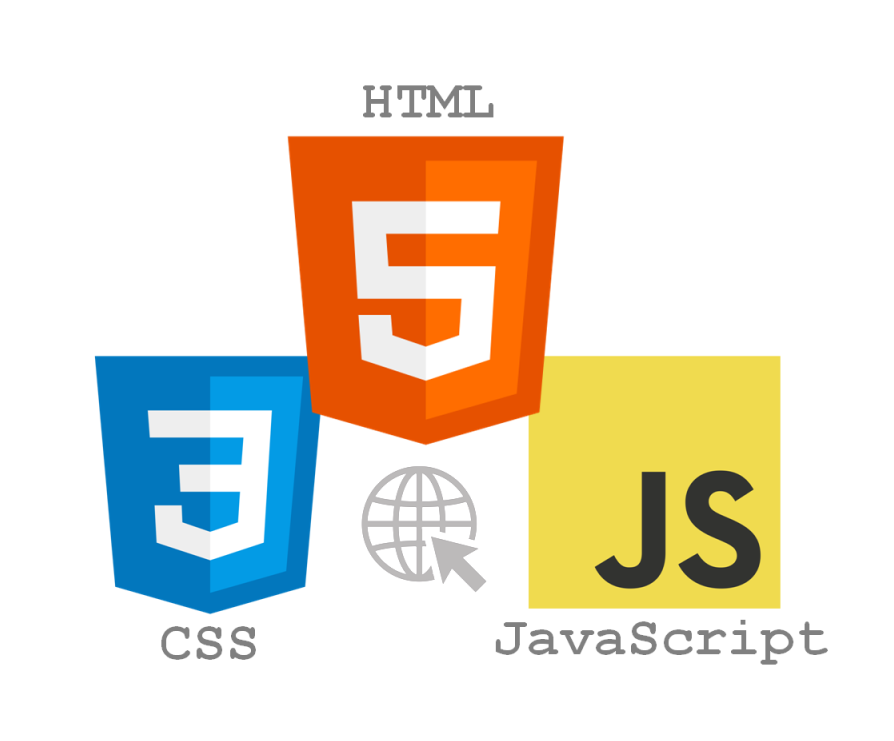

What You Will Learn:
Databases:

- Key terminology and practical applications
- Creating, querying, and updating databases
- Designing databases using the entity-relationship model
Web Development:
- Building static and interactive web documents
- Setting up web servers and generating dynamic, server-side content
- Developing web applications integrated with databases
How the Course Is Run
Each week, we will meet twice: once for the lecture and once for the tutorial. Both lectures and tutorials will be in person and will not be recorded.
Accessibility Statement
Students with diverse learning styles and needs are welcome in this course. If you have a disability or health consideration that may require accommodations, please contact AccessAbility Services.
Diversity Statement
Diversity is central to who we are. We strive to create an inclusive learning environment. If you have concerns, please approach the instructor or UTSC Equity & Diversity Office.
Academic Integrity
Plagiarism is considered academic fraud and is taken very seriously. Review the U of T Governing Council's Code.
How to Avoid Plagiarism:
- Never copy another student’s solution.
- Never show your work to other students.
- Do not use online solutions.